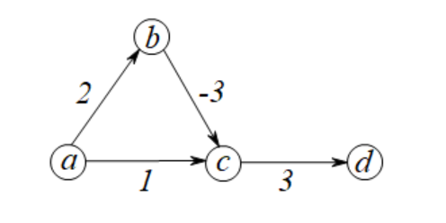
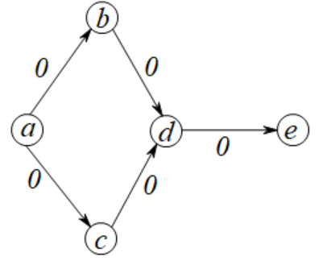

算法导论22.3 Exercises 答案
22.3-1
以\(s\)作为起点时的迭代过程如下：
\(\begin{array}{|l|l|l|}\hline v&d&\pi\\\hline s&0&\text{NIL}\\\hline t&\infty&\text{NIL}\\\hline x&\infty&\text{NIL}\\\hline y&\infty&\text{NIL}\\\hline z&\infty&\text{NIL}\\\hline \end{array} \underrightarrow{\;\;s\;\;} \begin{array}{|l|l|l|}\hline v&d&\pi\\\hline s&0&\text{NIL}\\\hline t&3&s\\\hline x&\infty&\text{NIL}\\\hline y&5&s\\\hline z&\infty&\text{NIL}\\\hline \end{array} \underrightarrow{\;\;t\;\;} \begin{array}{|l|l|l|}\hline v&d&\pi\\\hline s&0&\text{NIL}\\\hline t&3&s\\\hline x&9&t\\\hline y&5&s\\\hline z&\infty&\text{NIL}\\\hline \end{array} \underrightarrow{\;\;y\;\;} \begin{array}{|l|l|l|}\hline v&d&\pi\\\hline s&0&\text{NIL}\\\hline t&3&s\\\hline x&9&t\\\hline y&5&s\\\hline z&11&y\\\hline \end{array} \underrightarrow{\;\;x\;\;} \begin{array}{|l|l|l|}\hline v&d&\pi\\\hline s&0&\text{NIL}\\\hline t&3&s\\\hline x&9&t\\\hline y&5&s\\\hline z&11&y\\\hline \end{array} \underrightarrow{\;\;z\;\;} \begin{array}{|l|l|l|}\hline v&d&\pi\\\hline s&0&\text{NIL}\\\hline t&3&s\\\hline x&9&t\\\hline y&5&s\\\hline z&11&y\\\hline \end{array}\)
以\(z\)作为起点时的迭代过程如下：
\(\begin{array}{|l|l|l|}\hline v&d&\pi\\\hline s&\infty&\text{NIL}\\\hline t&\infty&\text{NIL}\\\hline x&\infty&\text{NIL}\\\hline y&\infty&\text{NIL}\\\hline z&0&\text{NIL}\\\hline \end{array} \underrightarrow{\;\;z\;\;} \begin{array}{|l|l|l|}\hline v&d&\pi\\\hline s&3&z\\\hline t&\infty&\text{NIL}\\\hline x&7&z\\\hline y&\infty&\text{NIL}\\\hline z&0&\text{NIL}\\\hline \end{array} \underrightarrow{\;\;s\;\;} \begin{array}{|l|l|l|}\hline v&d&\pi\\\hline s&3&z\\\hline t&6&s\\\hline x&7&z\\\hline y&8&s\\\hline z&0&\text{NIL}\\\hline \end{array} \underrightarrow{\;\;t\;\;} \begin{array}{|l|l|l|}\hline v&d&\pi\\\hline s&3&z\\\hline t&6&s\\\hline x&7&z\\\hline y&8&s\\\hline z&0&\text{NIL}\\\hline \end{array} \underrightarrow{\;\;x\;\;} \begin{array}{|l|l|l|}\hline v&d&\pi\\\hline s&3&z\\\hline t&6&s\\\hline x&7&z\\\hline y&8&s\\\hline z&0&\text{NIL}\\\hline \end{array} \underrightarrow{\;\;y\;\;} \begin{array}{|l|l|l|}\hline v&d&\pi\\\hline s&3&z\\\hline t&6&s\\\hline x&7&z\\\hline y&8&s\\\hline z&0&\text{NIL}\\\hline \end{array}\)
22.3-2
令\(G=(V,E),V=\{a,b,c\},E=\{(a,b),(b,c),(a,c),(c,d)\},w(a,c)=1,w(a,b)=2,w(b,c)=-3,w(c,d)=3\)，如下图所示：

由图可以知道\(\delta(a,d)=2\)，但是从起点\(a\)运行Dijkstra算法后，得到的结果为\(d.d=4\)。这是因为\(c\)比\(b\)先弹出优先队列，并且此时对\((c,d)\)进行了松弛操作。当\(c\)的距离被更新成正确的距离\(\delta(a,c)=-1\)后，节点\(c\)已经进入集合\(S\)，无法再更新后继节点。
定理22.6证明不成立的原因是因为采用了所有边权为非负的假设，从而保证\(\delta(s,y)\le \delta(s,u)\)，其中\(s\rightarrow y\)是\(s\rightarrow u\)的一条子路径。
22.3-3
这个做法是正确的。
假设队列最后一个节点是\(z\)，那么在第\(|V|-1\)轮循环结束后，\(\forall v\in V-\{z\}\)，已经都有\(v.d=\delta(s,v)\)，并且此时对于\(\forall (u,z)\in E\)，这些边都已经进行过一次松弛，因此根据收敛性质，有\(z.d=\delta(s,z)\)。因此这个改动的操作是正确的。
22.3-4
修改之后的过程如DIJKSTRA'所示。使用一个属性mark表示阶段\(u\)是否曾经进入过优先队列。入队时机从初始化阶段改成了在松弛过程中通过mark标记进行入队。
1 | DIJKSTRA'(G, w, s) |
22.3-5
整个算法分三个步骤：
- 判断\(v.\pi\)是否构成了以\(s\)为根节点的一棵有根树。具体方法是对\(v.\pi,v\)反向进行BFS，观察是否能到达所有节点。这个过程需要\(O(V)\)的时间。
- 判断最短路径树中的所有树边是不是真实的树边，具体判断是对于所有非根节点\(v\)，判断\(v.d=v.\pi.d+w(v.\pi,v)\)是否成立。这个过程需要\(O(V+E)\)的时间。
- 判断图\(G\)中是否还有边需要松弛。如果有，那么说明这棵树不是最短路径树。这个过程需要\(O(V+E)\)的时间。
算法CHECK-DIJKSTRA-OUTPUT给出了一棵判断给定的\(v.\pi,v.d\)是否合法的过程，其时间复杂度为\(O(V+E)\)。
1 | CHECK-DIJKSTRA-OUTPUT(G, w, s) |
22.3-6
令\(G=(V,E),V=\{a,b,c,d,e\},E=\{(a,b),(b,d),(a,c),(c,d),(d,e)\},w(a,b)=w(b,d)=w(a,c)=w(c,d)=w(d,e)=0\)，如下图所示：

考虑计算\(\delta(a,e)\)的值。可以发现从\(a\)到\(e\)有一条\(a\rightarrow b\rightarrow d\rightarrow e\)的路径。那么按照这个证明过程的假设，\((b,d)\)一定先于\((d,e)\)松弛。然而实际上，当\(c\)比\(b\)先从\(Q\)出来，边\((c,d)\)的进行了一次松弛，此时\(d.d=0\)；如果\(d\)仍然先比\(b\)从优先队列出来，那么\((d,e)\)完成松弛；接下来\(b\)从\(Q\)中出来，对\((b,d)\)边进行松弛。在这个过程中，边\((d,e)\)先于边\((b,d)\)进行松弛，因此不能够用路径松弛性质证明Dijkstra算法的正确性。
22.3-7
如果一条通信路径\(v_1,v_2,v_3,\dots,v_k\)是最可信的（其中\(v_1=u,v_k=v\)），那么相当于最大化如下值：
\[\prod_{i=1}^{k-1}r(v_i,v_{i+1})\]
对其取对数后，也就是有最大化：
\[\sum_{i=1}^{k-1}\lg r(v_i,v_{i+1})\]
由于\(r(i,j)\in [0,1]\)，因此我们需要去掉\(r(i,j)=0\)的边，防止不适用对数函数。那么此时\(\lg r(v_i,v_{i+1})\) 是一个负数。进一步，我们相当于最小化：
\[\sum_{i=1}^{k-1}-\lg r(v_i,v_{i+1})\]
由此可知，\(-\lg r(v_i,v_{i+1})\ge 0\)恒成立。我们可以使用Dijkstra算法来求解这个问题。
算法由程序RELIABLE-PATH给出。由于其主要过程为使用DIJKSTRA作为子程序，因此其时间复杂度为\(O(E\lg V)\)。
1 | RELIABLE-PATH(G, r, s, t) |
22.3-8
图\(G\)中的每一条边\(e\)都被\(w(e)\)条新边所取代，因此每条边贡献了\(w(e)-1\)个节点。因此现在图\(G'\)具有\(\displaystyle{|V|+\sum_{e\in E} (w(e)-1)=|V|+\sum_{e\in E} w(e)-|E|}\)个节点。
为了证明\(V\)在\(G\)中的Dijkstra算法的出队顺序与在\(G'\)中BFS的出队相对顺序是一致的。我们考虑令\(u,v\in V\)，并且在Dijkstra算法中，\(u\)先比\(v\)出队，因此有\(u.d<v.d\)。那么在图\(G'\)中，每一条在\(E\)中的边替换成了\(w(u,v)\)条连接中间对应节点的边。因此在图\(G'\)中，访问到\(u\)需要\(u.d\)步，访问到\(v\)需要\(v.d\)步，因此在\(G'\)中，\(v\)后于\(u\)被访问。
22.3-9
由于一条边的最大长度为\((|V|-1)W\)，因此我们可以考虑建立\((|V|-1)W+2\)个槽，其中第\(i\)个槽防止满足\(v.d=i\)的节点\(v\)，最后一个槽用于放置满足\(u.d=\infty\)的节点。假设从一个槽插入和删除节点的时间复杂度均为\(O(1)\)，它们通过一个双向链表维护。
随着松弛过程的进行，所有节点只会从后往前进行移动。此外，由于优先队列的出队顺序\(u\)满足\(u.d\)是单调不下降的，因此只需要从小到大遍历每个槽即可。这个算法由程序DIJKSTRA'给出，其时间复杂度为\(O((V-1)W+E)=O(VW+E)\)。
1 | DIJKSTRA''(G, W, w, s) |
22.3-10
可以知道，当\(u\)从优先队列\(Q\)弹出来后，并且插入集合\(S\)中。因此，\(\forall x\in S,x.d\le u.d\)均成立。对于\(v\in V-S\)，如果\(v\)被\(S\)中的节点松驰过，那么有\(v.d\le x.d+w(x,v)\le u.d+W\)；如果没有被松驰过，那么\(v.d=\infty\)。因此，当\(u\)出队时，优先队列中的不同\(d\)值取值范围为\([u.d,u.d+W]\cup\{\infty\}\)，一共有\(W+2\)个不同取值。
最终，从题目22.3-9而来，可以考虑使用一棵平衡二叉树来维护这些非空链表：如果槽\(d\)中的链表是非空的，那么这棵二叉树应该含有键值为\(d\)对应的链表；否则不包含，更新后若链表为空则删除节点。最终，无论是一次LIST-INSERT'操作还是一次LIST-DELETE'操作，都需要先花费\(O(\lg
W)\)的时间查找到其所在的链表，然后再对这个链表以\(O(1)\)的时间进行处理。由于这些操作一共有\(|V|+2|E|\)次，因此整个算法需要\(O((V+E)\lg W)\)的时间复杂度。
22.3-11
原版的证明关键在于，由于\(E\)中所有路径都是非负权，因此\(w(y,u)\ge 0\)，从而得出\(\delta(s,y)\le \delta(s,u)\)。由于已经假设了\(|S|\ge 2,y\not\in S\)，因此\(y\ne s\)必定成立。也就是说，对于\(\forall (s,u)\in E\)，这个证明没有对\((s,u)\)的权值做出限制，因此定理22.6的证明也适用于这里的证明。
22.3-12
为了排除常数\(C\)的影响，我们构造新的边权函数\(w'(\cdot.\cdot)=\dfrac{w(\cdot,\cdot)}{C}\)。根据题目可知，\(w'(\cdot,\cdot)\in [1,2]\)。那么在求出最短路之后，将全部路径值乘回\(C\)即可。
我们考虑开设\(2(|V|-1)+2\)个桶，除了最后一个桶放置\(u.d=\infty\)的节点，第\(i\)个桶放置满足\(u.d\in[i,i+1)\)的节点。在这种情况下，如果目前正在访问节点\(u\)，边\((u,v)\)进行了一次松弛，那么\(v\)所在的桶必定不在\(u\)所在的桶中（因为权值\(w'(u,v)\ge 1\)）；类似的，如果\(v\)在\(u\)的桶内，那么松弛操作必定不成功。因此，当桶内的节点\(u\)被弹出时，它必定能保证\(u.d=\delta(s,u)\)。
由于最短路径长度最大能达到\(2(|V|-1)\)，因此我们需要开设\(2|V|\)个桶来存放这些节点。遍历每个桶的时间为\(O(V)\)，遍历每条边的时间为\(O(V+E)\)，因此整个算法的时间复杂度为\(O(V+E)\)。具体过程由DIJKSTRA-C给出。
1 | DIJKSTRA-C(G, w, C, s) |